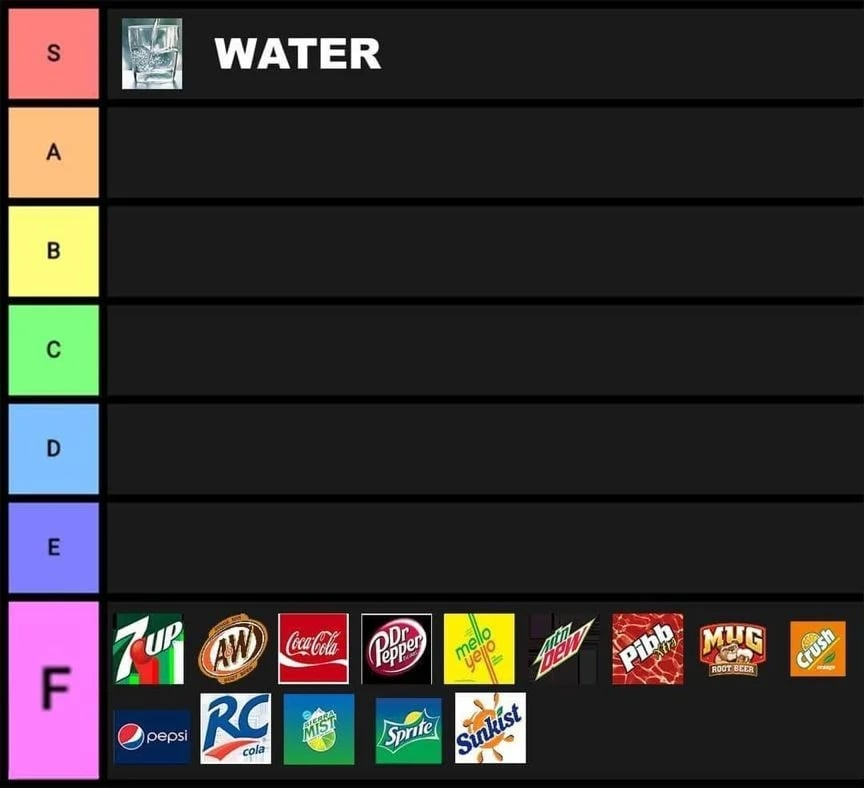

건강챙겨

건강챙겨
세상에 물 이거완전 독극물 이잖아?
필수라고 해서 가득 채운 통에 넣어두니까 죽더라고 너무 무서워
그러네 독극콜라는없잖아
실제로 물은 독이 맞음
지구에 존재하는 모든 물질은 독임 그리고 그것을 결정하는 것은 용량이다
그렇다고 무리하게 끊으면 급성금단증상와서 죽더라..
물을 마신 사람은 100% 죽는다

진지빨면 B에 탄산수, C나 D에 차 정도일까
건강 생각해서 차 먹는건데 그거 밖에 안됨?
녹차류에는 카페인들어잇긴한데
타임지가 선정한 세계 10대 건강식품에 녹차 있던데
내가 말하는 차는 말 그대로 차(茶)를 쓰는 홍차 같은거. 말만 차인 생강차, 대추차, 캐모마일티 이런거 말고
탄산수도 이빨에.안좋지.않을까??
약산성이라 치아에 영향을 줄 정도가 못 됨
위에도 안좋음
보리차는 괜찮지 않아?
오늘부터 칠성사이다로 달린다 실제로 하루에 콜라 1.25리터 이상씩 마셧는데 오늘한번 죽어보자
지금 사람의 70퍼가 물이라던데 ㅋㅋㅋ
이거 물단 주작글이라고 밝혀진지 쫌 됨
그럼 10명중에 7명이 물이라는건데.....
나도 모르게 내가 물있수도 있겠다
굴단 주작글도 많이 밝혀짐
좆까
물이랑 비견가능한 음료는 "옥수수"차랑 보리차뿐임
옥수수수염차말고 옥수수차
옥수수 액상과당차!
물을 조금이라도 입에 댄 사람은 100년 이내로 죽는다더라
솔의눈 데자와 실론티는 음료도 아니란 말이냐
탄산수는?
A티어에 맥콜 천연사이다 넣어줘~
제로음료는 위에다가 해줘
반박시 선인장
펩제는 차원달라
인간이 마시면 반드시 200년안에 죽는다는 독성물질 일산화이수소 ㄷㄷ
물보다 뛰어난건 얼음물밖에없음 ㅇㅇ
보리차 같은 곡물차는 물대신 가능하다던데
죽은 사람들 공통점이 평생 물을 계속 마셔왔다는것임 ㅇㅇ